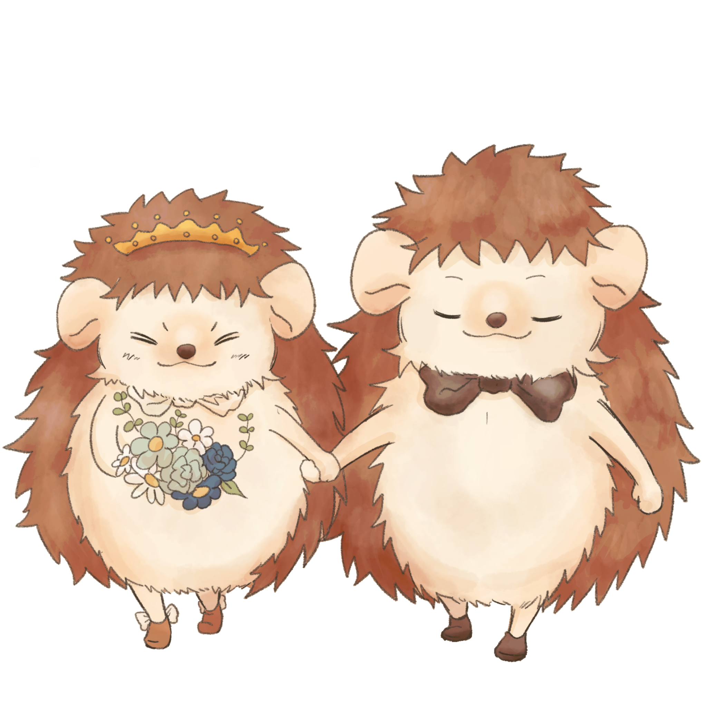
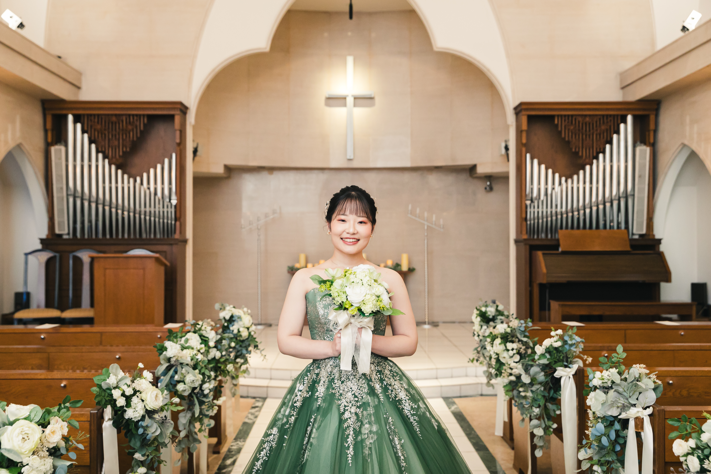
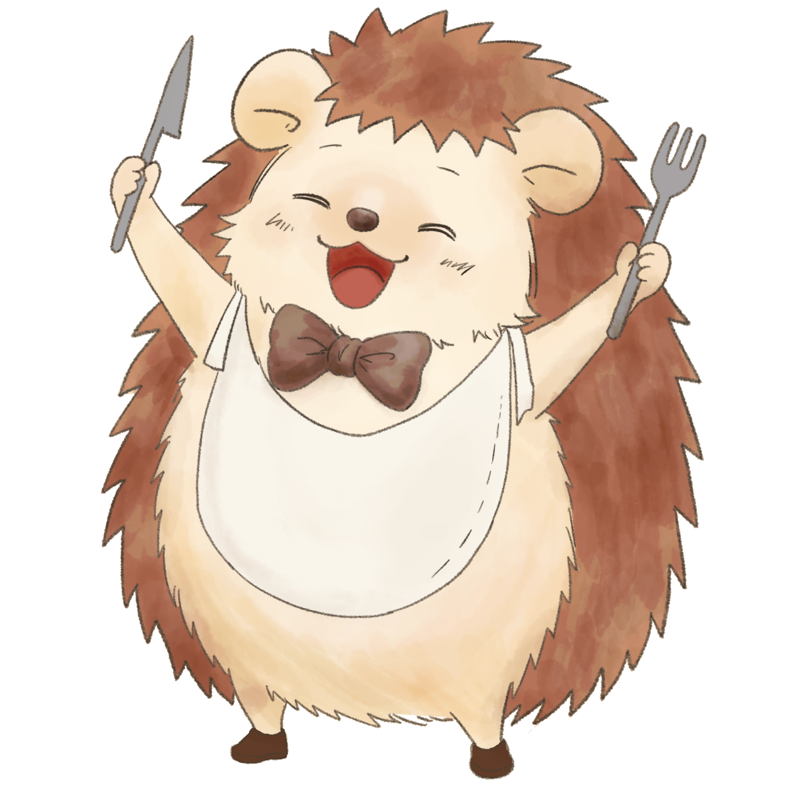

Wedding Invitation
2026 . 08 . 22
今日という日を迎えられたのはいつも温かく見守り 支えてくださる皆様のおかげです
ささやかではございますが感謝の気持ちを込めて おもてなしの席をご用意いたしました
美味しいお食事とお飲み物とともにどうぞごゆっくりとおくつろぎください



テーブルをタップすると詳細が表示されます
SSID: 1F-Lobby / 1FLobby_3F
当日皆様が撮影されたお写真はこちらの共有アルバムへアップロードをお願いいたします